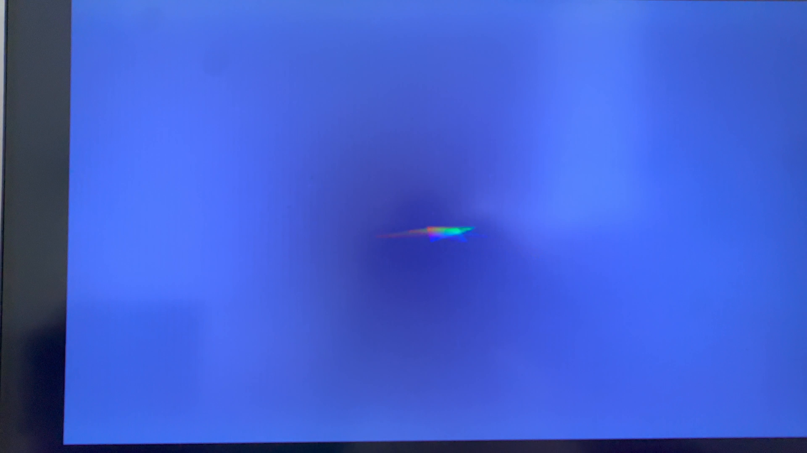
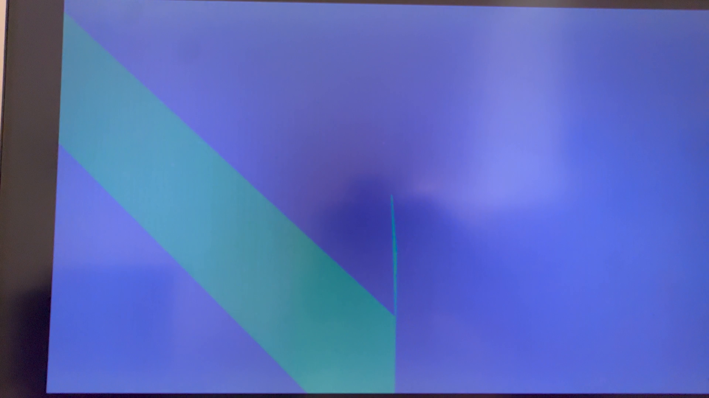
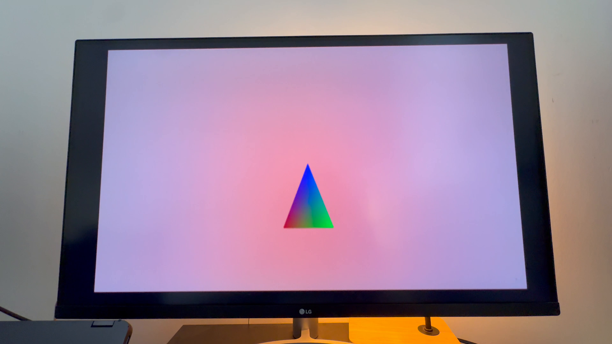

pantheon-viral-boot-to-world-loop.gif — IMG_4586.MOV ~20–31s (PS2 + 94BILLY title) + ~43.5–52s (world). Loops as a full clip.Double-click this file or drag it into a browser tab. Paths are relative to docs/media/.
Windows (Explorer): \\wsl.localhost\Ubuntu\home\marvin\Pantheon\docs\media\VIEW_PANTHEON_MEDIA.html
pantheon-viral-boot-to-world-loop.gif: Sony/PS2 splash → WWW.94BILLY.COM → green Path 1 world (one continuous share).Suggested 3-up (carousel): (1) pantheon-viral-boot-to-world-loop.gif — (2) pantheon-viral-rgb-triangle-lg.png — (3) pantheon-ps2-world-4587.gif.

pantheon-viral-ps2-particles.png — iconic PS2-era screen photo (from your captures).
pantheon-viral-ps2-waves.png — second BIOS/menu-adjacent frame; A/B test thumbnails.
pantheon-viral-rgb-triangle-lg.png — dev-cred still; great for Twitter/X tech crowd.
pantheon-viral-boot-to-world-loop.gif — IMG_4586.MOV ~20–31s (PS2 + 94BILLY title) + ~43.5–52s (world). Loops as a full clip.
pantheon-viral-9x16-hardware.gif — vertical (Shorts / Reels / TikTok).
pantheon-viral-power-moment.gif — short hook from IMG_4587.MOV ~104s.
pantheon-viral-world-wide-4586.gif — landscape loop from IMG_4586.MOV.
pantheon-ps2-world-4587.gif — main repo loop (longer take).
pantheon-hero-world-4587.png — landing / Open Graph still (PS2 in frame + green world).github.com/94BILLY/Pantheon · WordPress: docs/pantheon-landing.html